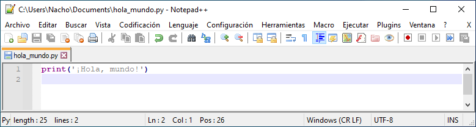

Abre Notepad++, una vez abierto pulsa en Archivo, Nuevo:

A continuación, pulsa en Archivo, Guardar como y en Documentos [1] pon hola_mundo.py [2] con tipo de archivo Python file (*.py; *.pyw) [3] y pulsa en Guardar [4]:
Escribe el siguiente código de Python:
print('¡Hola, mundo!')A continuación, pulsa en Archivo, Guardar.
Si te fijas, en la parte superior aparece la ruta donde está alojado tu código en Python. En este caso el código está en la carpeta C:\Users\Nacho\Documents\.
Abre PowerShell, una de las dos interfaces de línea de comandos incluida en Windows.
A continuación, entra en la carpeta donde está alojado tu código en Python con el comando cd ruta_carpeta donde ruta_carpeta será la ruta de la carpeta donde está alojado dicho código.
Por último, ejecuta el programa con python hola_mundo.py:
¡Enhorabuena! Has escrito tu primer programa en Python y lo has ejecutado con éxito.
Tutorial creado por Manuel Ignacio López Quintero bajo esta licencia | Volver a tutoriales.